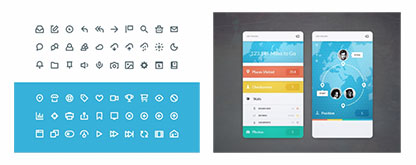

切图的基本规范 发表于 2017-04-17 开发在实现过程中，需要计算好每一个元素（包括文字，图片等）的位置，然后在调用我们切好的图进行填充。  哪些内容需要切图 icon 不规则图形一般为PNG24 三种屏幕尺寸下切图的尺寸规格 320px 1x 640px 2x 960px 3x 快速的切图方法Cutterman是一个PS拓展功能切图插件，可快速进行切图。 切图的命名 用英文命名，不用拼音 每一部分用下划线分隔 两倍图在名字最后要加@2X 三倍图在名字最后要加@3X